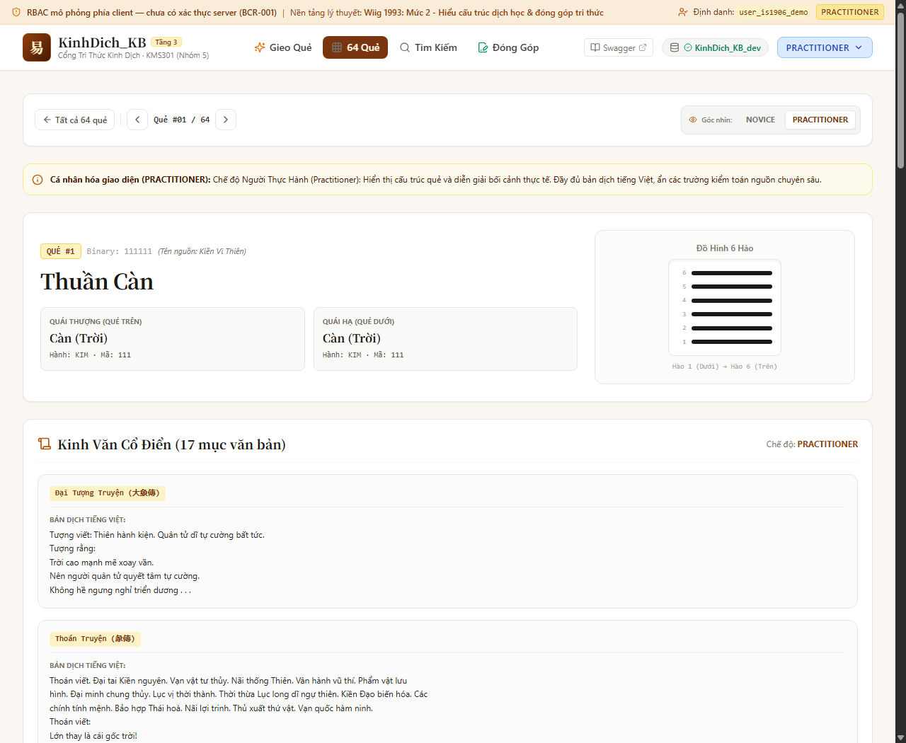
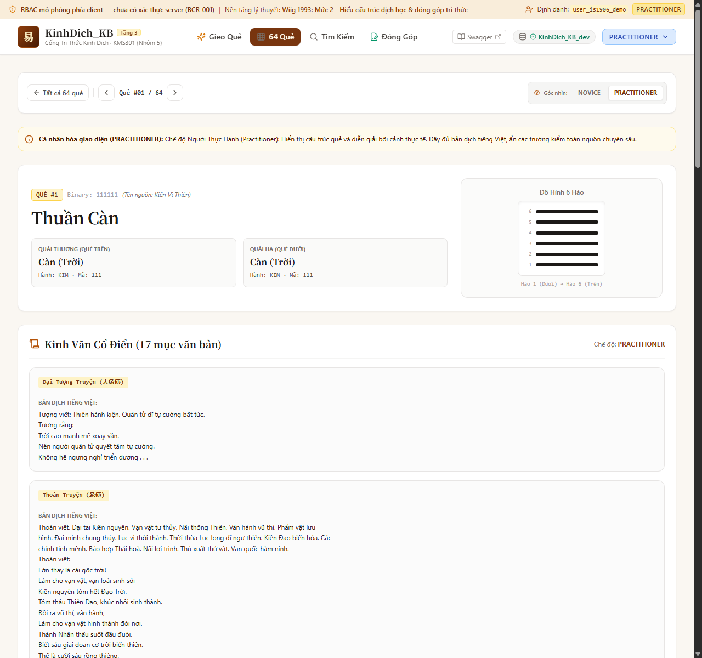
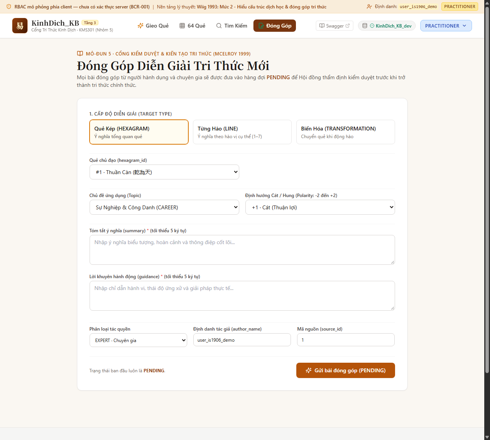
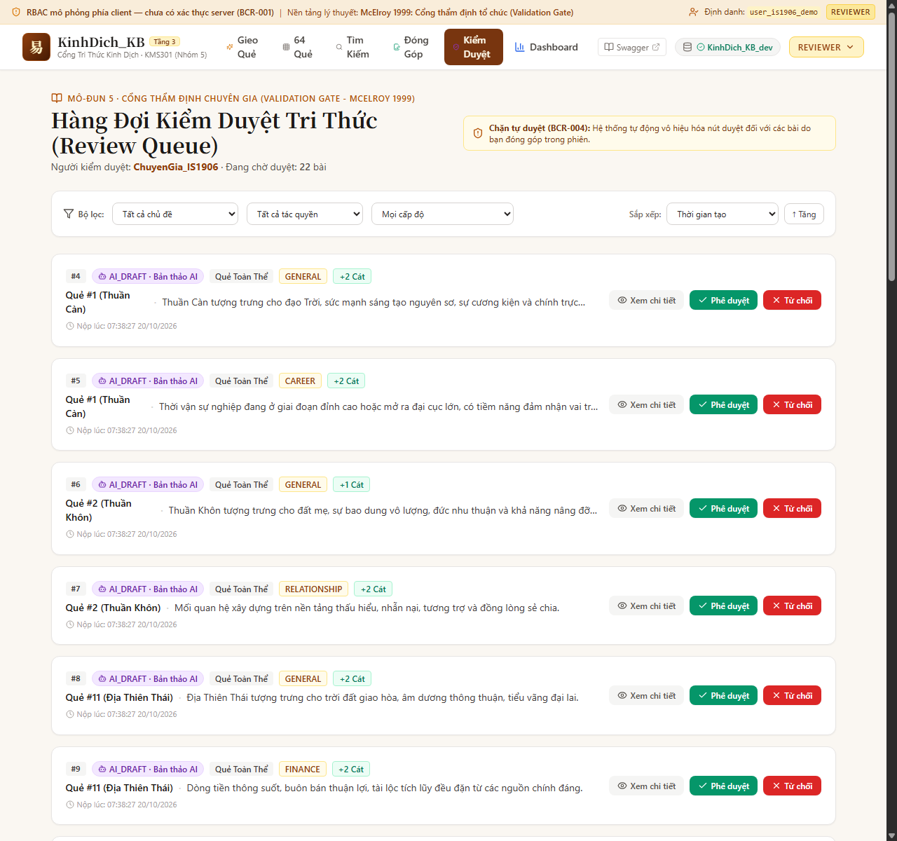
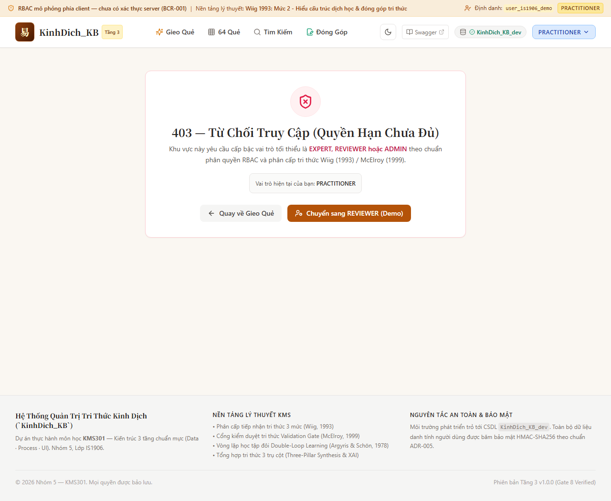
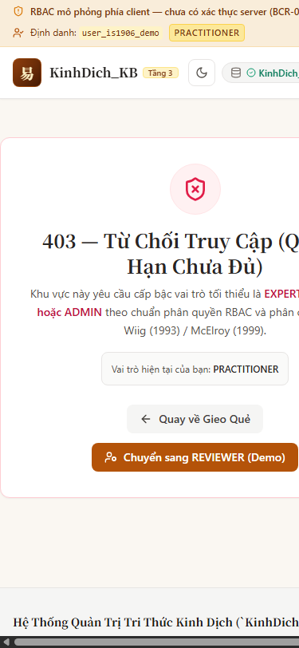

HƯỚNG DẪN VẬN HÀNH & KHAI THÁC WEB · ACCESS & INTERFACE LAYER
SỔ TAY HƯỚNG DẪN SỬ DỤNG HỆ THỐNG CỔNG TRI THỨC KINH DỊCH
Khai Thác Chiêm Đoán Mai Hoa Dịch Số, Tra Cứu 64 Quẻ Học Thuật, Kiến Tạo Tri Thức Mới & Vận Hành Vòng Lặp Học Tập Đôi (Double-Loop Learning)
“Dịch dã, biến dịch dã — Cẩm nang hành động xử thế theo thời vận kết hợp quản trị tri thức hiện đại và AI có kiểm toán”
Lời Nói Đầu & Mục Tiêu Tài Liệu
Chào mừng bạn đến với Cổng Tri Thức Kinh Dịch (KinhDich_KB). Đây là nền tảng quản trị tri thức chuyên sâu đầu tiên kết hợp trọn vẹn giữa Dịch học cổ điển phương Đông (nguyên lý âm dương tiêu trưởng, Bát quái Tiên thiên và thuật toán Mai Hoa Dịch Số của Thiệu Khang Tiết triều Tống) với Khoa học Quản trị Tri thức hiện đại (KMS) và Trí tuệ Nhân tạo có kiểm soát đạo đức (Audited AI).
Hệ thống được thiết kế theo tôn chỉ: Kinh Dịch không phải là mê tín dị đoan để phán xét định mệnh, mà là một kho tàng tri thức mô hình hóa quy luật vận động của tự nhiên và xã hội, giúp con người thấu triệt thời thế, tu dưỡng bản thân và đưa ra quyết định hành động sáng suốt (Hệ Hỗ Trợ Ra Quyết Định — Decision Support System).
Mục đích của Sổ tay Hướng dẫn:
- Giúp người dùng ở mọi trình độ thao tác trơn tru, dễ dàng trên giao diện web.
- Hiểu đúng bản chất của kết quả chiêm đoán: nhận diện điều NÊN LÀM, điều NÊN TRÁNH, thời hiệu tác động và phương hướng thuận lợi thay vì lo âu về số phận.
- Hướng dẫn người nghiên cứu tra cứu toàn văn kinh điển, so sánh Thoán từ, Hào từ, Đại tượng và Hán tự Noto Serif TC chuẩn xác.
- Hướng dẫn quy trình Đóng góp Tri thức (McElroy 1999) và Cổng Thẩm định Chuyên gia chống tự phê duyệt (BCR-004).
- Khai thác Bảng điều khiển Quản trị (KMS Dashboard) và Vòng lặp học tập đôi (Argyris & Schön 1978).
Mục Lục Tổng Thể Sổ Tay
-
PHẦN I: TỔNG QUAN HỆ THỐNG & NỀN TẢNG TRI THỨC KMS
Trang 3
- 1.1. Ba Trụ Cột Lý Thuyết Quản Trị Tri Thức Cốt Lõi3
- 1.2. Ma Trận Phân Quyền 5 Vai Trò Người Dùng (RBAC)4
- 1.3. Hai Chế Độ Hiển Thị: Đời Thường vs. Chế Độ Kỹ Thuật4
- 1.4. Bố Cục Điều Hướng & Chỉ Báo Sức Khỏe Hệ Thống4
-
PHẦN II: HƯỚNG DẪN THAO TÁC CHI TIẾT 6 PHÂN HỆ
Trang 5
- 2.1. Phân hệ 1: Gieo Quẻ Mai Hoa & Bản Định Hướng Hành Động5
- 2.2. Phân hệ 2: Tra Cứu 64 Quẻ Kinh Dịch & Cá Nhân Hóa Wiig9
- 2.3. Phân hệ 3: Tìm Kiếm Tri Thức Toàn Văn & Đa Chiều12
- 2.4. Phân hệ 4: Đóng Góp Tri Thức Mới (Knowledge Claim)12
- 2.5. Phân hệ 5: Hàng Đợi Kiểm Duyệt & Chống Tự Duyệt (Validation Gate)14
- 2.6. Phân hệ 6: Bảng Điều Khiển Quản Trị & Vòng Lặp Học Tập Đôi17
-
PHẦN III: KỊCH BẢN THỰC HÀNH THEO TÌNH HUỐNG THỰC TẾ (USE CASES)
Trang 19
-
PHẦN IV: NGUYÊN TẮC AN TOÀN ĐẠO ĐỨC & GIẢI ĐÁP THẮC MẮC (FAQ)
Trang 21
-
PHẦN V: PHỤ LỤC & DANH MỤC THAM CHIẾU QUY CHUẨN
Trang 22
Phần I: Tổng Quan Hệ Thống & Nền Tảng Tri Thức KMS
1.1. Ba Trụ Cột Lý Thuyết Quản Trị Tri Thức Cốt Lõi
Không giống như các ứng dụng bói toán thông thường, toàn bộ giao diện và luồng dữ liệu của KinhDich_KB được xây dựng trên 3 lý thuyết kinh điển của ngành Quản trị Tri thức (Knowledge Management System — KMS):
1. Wiig (1993)
Phân Tầng Năng Lực
(Novice → Expert)
→
2. McElroy (1999)
Cổng Thẩm Định Tổ Chức
(Validation Gate)
→
3. Argyris & Schön (1978)
Học Tập Vòng Lặp Đôi
(Double-Loop Learning)
| Nền Tảng Lý Thuyết |
Khái Niệm Khoa Học |
Hiện Thực Hóa Trên Giao Diện Web |
Karl Wiig (1993)
Knowledge Hierarchy |
Tri thức cần được tinh giản và phân phối theo năng lực nhận thức của người tiếp nhận. Người mới cần bản dịch ứng dụng; chuyên gia cần chứng cứ học thuật gốc. |
Bộ chọn cấp độ (NOVICE, PRACTITIONER, EXPERT). Mức Novice ẩn toàn bộ chữ Hán và mã trace phức tạp; mức Expert hiển thị toàn văn Hán Nôm Noto Serif TC, thoán từ, hào từ và nguồn kiểm toán.
|
Mark McElroy (1999)
Knowledge Life Cycle |
Một ý kiến cá nhân (Knowledge Claim) chỉ trở thành Tri thức Chính thức của tổ chức sau khi vượt qua Cổng Thẩm định (Validation Gate) có định danh người duyệt. |
Form đóng góp (/contribute) chỉ lưu bài ở trạng thái PENDING. Hàng đợi (/review) có cơ chế Anti-Self-Review khóa nút duyệt bài của chính mình và yêu cầu định danh người duyệt cụ thể.
|
Argyris & Schön (1978)
Double-Loop Learning |
Học tập không chỉ là sửa lỗi tức thời (Single-loop) mà là rà soát, tái đánh giá các giả định và trọng số mô hình nền tảng dựa trên phản hồi thực tế. |
Modal Phản hồi Thực chứng (Outcome Feedback), cờ Ca Mẫu Mực (Best Practice Flag), và thuật toán tự động rà soát quy tắc suy luận có tỷ lệ lệch cao trên Dashboard.
|
1.2. Ma Trận Phân Quyền 5 Vai Trò Người Dùng (RBAC Matrix)
Hệ thống phân định rành mạch 5 vai trò người dùng nhằm bảo đảm tính toàn vẹn dữ liệu và đạo đức quản trị:
| Vai Trò (Role) |
Huy Hiệu |
Đối Tượng Phù Hợp |
Quyền Hạn Cốt Lõi Trên Web |
| NOVICE |
Người Mới |
Người dùng đại chúng, người cần tìm lời khuyên thực tế cho sự nghiệp, tài chính, cuộc sống. |
Gieo quẻ Mai Hoa, xem Bản định hướng hành động (Nên làm / Nên tránh), tra cứu 64 quẻ (bản dịch tiếng Việt dễ hiểu), gửi phản hồi thực chứng ca gieo.
|
| PRACTITIONER |
Người Thực Hành |
Người đang học Dịch, muốn xem quẻ biến, quẻ hỗ, dịch thơ và bắt đầu tham gia đóng góp. |
Bao gồm quyền Novice + Xem chi tiết cấu trúc hào quái, quẻ hỗ, quẻ biến; được quyền gửi đề xuất diễn giải tri thức mới (ở trạng thái PENDING).
|
| EXPERT |
Chuyên Gia |
Nhà nghiên cứu Dịch học, học giả cổ văn, chuyên viên phân tích hệ thống tri thức. |
Bao gồm quyền Practitioner + Xem toàn văn chữ Hán, nguồn kinh điển kiểm toán, vết luật suy luận DSL (Rule Trace), đánh dấu ca mẫu mực (Best Practice), truy cập Dashboard.
|
| REVIEWER |
Người Kiểm Duyệt |
Thành viên Hội đồng Thẩm định Tri thức (Validation Gate) của tổ chức / bộ môn. |
Toàn quyền kiểm tra Hàng đợi thẩm định (/review), phê duyệt (APPROVED) hoặc từ chối (REJECTED) bài nộp của chuyên gia và bản thảo do AI sinh ra.
|
| ADMIN |
Quản Trị Viên |
Quản trị viên kỹ thuật hệ thống, giám sát vận hành máy chủ và cơ sở dữ liệu. |
Toàn quyền trên mọi phân hệ, kích hoạt thuật toán Học tập Đôi (Double-Loop Trigger), giám sát chỉ số sức khỏe CSDL SQL Server và đồng bộ dữ liệu.
|
1.3. Hai Chế Độ Hiển Thị: Đời Thường vs. Chế Độ Kỹ Thuật (Technical Mode)
🌿 Chế Độ Đời Thường (Mặc Định)
Dành cho 95% người dùng thông thường. Toàn bộ các mã ID, JSON log, mã truy vết AST, trọng số toán học được ẩn đi. Giao diện tập trung vào ngôn ngữ đời thường, bảng tóm tắt NÊN LÀM / NÊN TRÁNH, gợi ý người đồng hành và định hướng tương lai.
🔬 Chế Độ Kỹ Thuật (Technical Mode)
Kích hoạt bằng công tắc "Chế độ Kỹ thuật" trên thanh điều hướng. Mở ra mã Case ID, thanh độ phủ tri thức (Knowledge Coverage Bar), vết luật DSL (Rule JSON trace), ID kinh văn, tên người duyệt (Verified by) và tham số học máy.
1.4. Bố Cục Điều Hướng & Chỉ Báo Sức Khỏe Hệ Thống
Thanh điều hướng phía trên cùng (Header) cho phép truy cập nhanh 6 phân hệ cốt lõi và các tiện ích quản trị:
- Gieo Quẻ (
/divination): Khởi tạo ca chiêm đoán và nhận lời luận giải hành động.
- 64 Quẻ Dịch (
/hexagrams): Tra cứu Bát quái toàn thư dạng ma trận 8×8 hoặc thẻ trực quan.
- Tìm Kiếm (
/search): Tìm kiếm toàn văn tiếng Việt không dấu, có dấu và Hán tự.
- Đóng Góp (
/contribute): Biểu mẫu gửi đề xuất diễn giải chuyên đề mới (Practitioner+).
- Kiểm Duyệt (
/review): Cổng thẩm định dành cho hội đồng chuyên gia (Reviewer & Admin).
- Dashboard (
/dashboard): Bảng điều khiển quản trị tri thức và học tập đôi (Expert+).
- Role Switcher (Bộ chuyển vai trò): Cho phép người dùng chuyển nhanh giữa 5 vai trò để trải nghiệm sự khác biệt về phân cấp tri thức theo Wiig (1993).
- Health Indicator (Chỉ báo kết nối): Hiển thị chấm xanh báo hiệu kết nối API FastAPI và Cloud SQL Server đang vận hành ổn định.
Phần II: Hướng Dẫn Thao Tác Chi Tiết 6 Phân Hệ
2.1. Phân hệ 1: Gieo Quẻ Mai Hoa & Bản Định Hướng Hành Động (/divination)
Đây là phân hệ trung tâm giúp người dùng tìm kiếm lời khuyên hành động cho các tình huống thực tế trong công việc và đời sống. Thuật toán Mai Hoa Dịch Số vận hành 100% tất định (deterministic), không ảo giác, bảo đảm tính nhất quán toán học.
A. Hướng Dẫn Thao Tác Gieo Quẻ
-
Bước 1: Chọn Phương thức Gieo Quẻ:
- Gieo theo Thời gian thực (Khuyên dùng): Hệ thống tự động thu thập Năm, Tháng, Ngày, Giờ Âm lịch chính xác theo múi giờ Việt Nam (UTC+7) để lập quẻ.
- Gieo theo Số tự chọn: Nhập 3 con số tâm niệm (Số 1 tính Thượng quái, Số 2 tính Hạ quái, Số 3 tính Hào động).
-
Bước 2: Chọn Chủ đề Chiêm đoán (Topic):
Chọn đúng lĩnh vực bạn đang đối mặt để hệ thống đối sánh quy tắc chuyên biệt:
Sự nghiệp (CAREER)
Tài chính (FINANCE)
Sức khỏe (HEALTH)
Tình cảm (RELATIONSHIP)
Học tập (ACADEMIC)
Tổng quát (GENERAL)
-
Bước 3: Nhập Nội dung Câu hỏi / Bối cảnh:
Ghi ngắn gọn tình huống của bạn (ví dụ: "Có nên thay đổi công việc sang công ty công nghệ trong quý 1 này không?").
-
Bước 4: Nhấn nút "Tiến Hành Lập Quẻ":
Hệ thống phản hồi tức thì (< 50ms) kết quả lập quẻ và tự động cuộn xuống khối luận giải.
Lưu Ý Đặc Biệt Về An Toàn Đạo Đức (Ethical Safety):
Đối với các chủ đề nhạy cảm như Sức khỏe (HEALTH) và Tài chính (FINANCE), hệ thống tự động kích hoạt banner cảnh báo an toàn bắt buộc (Safety Alert). Kinh Dịch chỉ đóng vai trò tham vấn tâm thế, tuyệt đối không thay thế chỉ định y khoa của bác sĩ hay tư vấn pháp lý / đầu tư của chuyên gia tài chính được cấp phép.
B. Đọc Hiểu Cấu Trúc Kết Quả Lập Quẻ
Kết quả lập quẻ Mai Hoa bao gồm 3 tầng thông tin sâu sắc:
1. Quẻ Chủ (Initial)
CĂN NGUYÊN HIỆN TẠI
Phản ánh bản chất sự việc ở thời điểm khởi đầu. Chứa một Hào Động (1 đến 6) đánh dấu điểm nút biến chuyển của thời thế.
2. Quẻ Hỗ (Nuclear)
DIỄN BIẾN NỘI TẠI
Tạo nên từ các hào 2-3-4 (Hạ Hỗ) và hào 3-4-5 (Thượng Hỗ) của quẻ Chủ. Thể hiện tiến trình ẩn tàng, các xung đột ngầm bên trong.
3. Quẻ Biến (Transformed)
CHUNG CUỘC TƯƠNG LAI
Sinh ra khi Hào Động đổi từ Âm sang Dương hoặc Dương sang Âm. Dự báo kết quả cuối cùng nếu đương số thuận theo quy luật vận động.
C. Phân Định Thể — Dụng & Tương Tác Ngũ Hành
Nguyên lý cốt lõi của Mai Hoa Dịch Số là xem xét mối quan hệ giữa Thể Quái (Bản thân) và Dụng Quái (Ngoại cảnh / Đối phương):
- Quái có Hào Động gọi là DỤNG (Khách thể): Đại diện cho hoàn cảnh, người khác, công việc, đối tác ngoài ý muốn.
- Quái tĩnh không có Hào Động gọi là THỂ (Chủ thể): Đại diện cho bản thân, nội lực và tâm thế của người hỏi.
- Quy tắc sinh khắc ngũ hành Mai Hoa:
- Dụng sinh Thể: Đại Cát — Thuận lợi lớn, đối tác hỗ trợ, thời thế ủng hộ.
- Thể sinh Dụng: Tiêu hao — Mất sức lực, hao tài tốn của mới đạt kết quả.
- Thể khắc Dụng: Vất vả nhưng thành — Phải vượt qua trở ngại bằng nỗ lực tự thân.
- Dụng khắc Thể: Hung hiểm — Gặp cản trở lớn, thị phi, nên thận trọng phòng thủ.
- Thể Dụng tỷ hòa (đồng hành): Bình ổn — Cùng hội cùng thuyền, hợp tác đôi bên cùng có lợi.
D. Thẻ Định Hướng Hành Động ("Điều Bạn Nên Làm Ngay")
Đây là tính năng độc quyền của KinhDich_KB nhằm giải quyết nhược điểm "mơ hồ, khó hiểu" của sách Dịch cổ xưa. Toàn bộ ngôn ngữ được chuyển hóa thành chỉ dẫn quản trị hành động:
Bản Định Hướng Hành Động · Sự Nghiệp
Cục Diện: Thời Vận Thuận Lợi Khởi Sắc
ĐẠI CÁT (+1.50)
Xu hướng tổng quát: Nội lực vững vàng được ngoại cảnh nâng đỡ. Thời điểm chín muồi để hiện thực hóa các kế hoạch đã chuẩn bị kỹ lưỡng từ trước.
⏱ Thời hiệu dự báo: Tác động mạnh nhất trong vòng 3 đến 6 tháng tới.
✓ Điều Nên Làm
- Chủ động đề xuất các sáng kiến mới với cấp trên hoặc đối tác.
- Mở rộng mạng lưới quan hệ công việc, tìm kiếm người dẫn dắt (mentor).
- Giữ thái độ khiêm nhường, kiên định với mục tiêu dài hạn.
✕ Điều Nên Tránh
- Tránh nóng vội đòi hỏi kết quả tức thì hoặc đốt cháy giai đoạn.
- Tránh tranh chấp quyền lợi nhỏ nhặt gây rạn nứt niềm tin đồng đội.
- Không tự phụ, chủ quan trước các điều khoản cam kết pháp lý.
👥 Người đồng hành nên tìm: Người thuộc hành Thổ hoặc Kim, có tính cách trầm tĩnh, thấu đáo và minh bạch.
🧭 Phương hướng ưu tiên: Hướng Tây Bắc hoặc Chính Tây thuận lợi cho đàm phán hợp đồng.
E. Tầng Lời Khuyên Hành Động AI (AI Advice Layer) & Lưu Bản Thảo
Nhằm gia tăng tính phong phú nhưng vẫn bảo đảm tuyệt đối tính chính xác Dịch lý, hệ thống tích hợp mô hình Google Gemini / Claude hoạt động theo kiến trúc PA2' (Tách biệt bất đồng bộ):
- Khóa nhãn và điểm số tất định: AI hoàn toàn không có quyền sửa đổi điểm Cát/Hung hay công thức Ngũ hành đã được động cơ cốt lõi chứng minh.
- Rào chắn 10 tiêu chuẩn (10 Guardrails): Mọi lời khuyên AI sinh ra bắt buộc phải có từ 3–5 gạch đầu dòng, không dùng từ ngữ khẳng định tuyệt đối (cấm các từ như "chắc chắn 100%", "tuyệt đối", "không thể tránh"), và phải gắn thẻ trích dẫn căn cứ thực tế.
- Quy trình Lưu Bản Thảo (Save Draft): Nếu bạn thấy lời khuyên AI sâu sắc, nhấn nút "Lưu bản thảo để chuyên gia duyệt". Hệ thống sẽ tự động đưa bản ghi này vào Hàng đợi Thẩm định với trạng thái
PENDING và mã tác giả AI_DRAFT. AI không bao giờ tự phê duyệt tri thức chính nó!
F. Gửi Phản Hồi Thực Chứng (Double-Loop Outcome Feedback)
Sau khi sự việc diễn ra trên thực tế (sau 1 tuần, 1 tháng hoặc 3 tháng), người dùng có thể quay lại nhấn nút "Gửi Phản Hồi Thực Chứng" trên ca gieo của mình.

Hình 2.1: Giao diện Modal Gửi Phản Hồi Thực Chứng giúp hệ thống học tập đôi theo Argyris & Schön (1978)
Tại đây, bạn điền kết quả thực tế đời sống (Thực tế là Cát, Hung hay Bình hòa) và ghi chú nhận xét. Dữ liệu thực chứng này là nhiên liệu quý giá để hệ thống phát hiện các quy tắc suy luận cần rà soát lại trọng số trên KMS Dashboard.
2.2. Phân hệ 2: Tra Cứu 64 Quẻ Kinh Dịch & Cá Nhân Hóa Wiig (/hexagrams)
Phân hệ Tra cứu 64 Quẻ là kho tàng bách khoa toàn thư Dịch học hoàn chỉnh, bao gồm toàn bộ 64 quẻ từ Thuần Càn (Quẻ 1) đến Hỏa Thủy Vị Tế (Quẻ 64) với chỉ mục chuẩn hóa 6 hào nhị phân.
A. Ma Trận Bát Quái 8×8 & Dạng Thẻ Trực Quan
Người dùng có thể chuyển đổi linh hoạt giữa 2 chế độ hiển thị trên thanh công cụ:
- Chế độ Ma trận 8×8 (Matrix Mode): Tọa độ kinh điển với 8 Quái Thượng nằm ngang và 8 Quái Hạ nằm dọc theo thứ tự Bát quái Tiên thiên (Càn, Đoài, Ly, Chấn, Tốn, Khảm, Cấn, Khôn). Giúp người nghiên cứu thấy rõ quy luật đối xứng và tổ hợp quái.
- Chế độ Thẻ (Cards Mode): Danh sách trực quan hiển thị từng thẻ quẻ với biểu tượng hào vạch âm dương, ngũ hành màu sắc và tóm lược ý nghĩa.
- Bộ lọc Ngũ hành: Lọc nhanh các quẻ thuộc Kim, Mộc, Thủy, Hỏa, Thổ chỉ bằng 1 cú nhấp chuột.

Hình 2.2: Giao diện Lưới Tra Cứu 64 Quẻ Kinh Dịch dạng Ma trận 8×8 Bát quái Tiên thiên
B. Phân Cấp Năng Lực Tiếp Nhận Tri Thức (Wiig 1993)
Để minh chứng sự khác biệt rõ rệt về phân cấp nhận thức, hệ thống cung cấp 3 góc nhìn dữ liệu độc lập cho cùng một quẻ:

Hình 2.3a: Cấp độ NOVICE — Ẩn Hán tự, tập trung định hướng hành động

Hình 2.3b: Cấp độ PRACTITIONER — Thêm quẻ Hỗ, quẻ Biến và thơ dịch

Hình 2.3c: Cấp độ EXPERT — Toàn văn Hán Nôm Noto Serif TC, nguồn kinh điển kiểm toán và vết duyệt chuyên gia
C. Hệ Thống 7 Loại Kinh Văn Cổ Điển
Tại tab "Kinh Văn Cổ Điển", bạn có thể nghiên cứu chi tiết từng phần văn bản nguyên tác:
- Thoán Từ (卦辭): Lời quẻ gốc của Chu Văn Vương định cát hung tổng quát của cả quẻ.
- Thoán Truyện (彖傳): Lời Khổng Tử giải thích nguyên nhân và cấu trúc hào quái sinh ra Thoán từ.
- Đại Tượng Truyện (大象傳): Quan sát hình tượng thiên nhiên của quẻ để rút ra đạo tu thân xử thế của bậc quân tử.
- Hào Từ (爻辭): Lời Chu Công chú giải chi tiết từng nấc thang biến động của 6 hào từ Sơ đến Thượng.
- Tiểu Tượng Truyện (小象傳): Lời Khổng Tử giải thích ý nghĩa vị trí đắc trung, chính vị của từng hào.
- Dụng Cửu (用九) & Dụng Lục (用六): Hai lời hào đặc biệt tối cao dành riêng cho quẻ Thuần Càn và Thuần Khôn.
2.3. Phân hệ 3: Tìm Kiếm Tri Thức Toàn Văn & Đa Chiều (/search)
Công cụ tìm kiếm được tối ưu hóa cho nghiên cứu Dịch học, hỗ trợ đa dạng phương thức nhập liệu:
- Tìm tiếng Việt không dấu: Nhập
can hệ thống tự động tìm thấy quẻ Càn; nhập truan tìm quẻ Truân.
- Tìm tiếng Việt có dấu: Tìm theo tên quẻ ("Địa Thiên Thái"), tên hào ("Sơ Cửu"), hoặc từ khóa nội dung ("hanh thông", "tiềm long", "quân tử").
- Tìm bằng Chữ Hán: Hỗ trợ nhập trực tiếp Hán tự nguyên tác như
乾, 坤, 元亨利貞.
- Bộ lọc kết hợp: Lọc theo Chủ đề (CAREER, FINANCE,...) và Bát quái Thượng / Bát quái Hạ.

Hình 2.4: Giao diện Tìm Kiếm Toàn Văn với từ khóa không dấu "can" tìm chính xác quẻ Thuần Càn
2.4. Phân hệ 4: Đóng Góp Tri Thức Mới (/contribute)
Hiện thực hóa mô hình Kiến tạo Tri thức (Knowledge Claim) theo McElroy (1999). Người dùng có vai trò từ PRACTITIONER trở lên được quyền gửi đề xuất góc nhìn diễn giải mới:

Hình 2.5: Biểu mẫu Đóng Góp Diễn Giải Tri Thức Mới với danh mục 16 nguồn chính thức đã kiểm toán
Các Bước Điền Biểu Mẫu Đóng Góp:
-
Chọn Mục Tiêu Diễn Giải (Target Type):
HEXAGRAM: Diễn giải áp dụng cho toàn bộ quẻ.LINE: Diễn giải chuyên sâu cho một vị trí hào cụ thể (Hào 1 đến Hào 6).TRANSFORMATION: Diễn giải về sự chuyển biến từ quẻ ban đầu sang quẻ biến khi hào động.
- Chọn Chủ Đề Áp Dụng: Gán nhãn lĩnh vực (Sự nghiệp, Tài chính, Gia đạo, Sức khỏe, Học vấn).
-
Chọn Nguồn Trích Dẫn Hợp Chuẩn:
Chỉ được chọn trong danh mục 16 nguồn chính thống của Tầng 1 (sách của Nguyễn Hiến Lê, Phan Bội Châu, Thiệu Ung, Nguyễn Duy Cần,... hoặc mô hình AI Draft). Chặn mạo danh nguồn kinh điển cổ xưa đối với người dùng thông thường.
- Nhập Tóm Tắt Ý Nghĩa & Lời Khuyên Hành Động: Trình bày rõ ràng bài học thực tiễn.
- Đánh Giá Điểm Phân Cực: Chấm điểm từ -1.0 (Rất Hung) đến +1.0 (Rất Cát).
- Nhấn nút "Gửi Đóng Góp Tri Thức": Bản ghi lập tức chuyển vào hàng đợi thẩm định ở trạng thái
PENDING.
2.5. Phân hệ 5: Hàng Đợi Kiểm Duyệt & Chống Tự Duyệt (/review)
Đây là Cổng Thẩm Định Tổ Chức (Validation Gate) do McElroy (1999) đề xuất, bảo đảm mọi tri thức trước khi đưa vào kho vận hành đều được hội đồng chuyên môn thẩm định chặt chẽ. Phân hệ này được bảo vệ bởi RoleGuard, chỉ mở cho vai trò REVIEWER và ADMIN.

Hình 2.6: Giao diện Hàng Đợi Thẩm Định Tri Thức với bộ lọc đa tiêu chí và thẻ cảnh báo chống tự phê duyệt
Cơ Chế Chống Tự Phê Duyệt Độc Quyền (Anti-Self-Review Guard — BCR-004)
Để ngăn chặn tình trạng chuyên gia tự thẩm định và hợp thức hóa bài nộp của chính mình, hệ thống áp dụng cơ chế bảo vệ nghiêm ngặt:
Quy tắc BCR-004: Nếu một bài diễn giải do chính tài khoản của bạn gửi trong phiên làm việc, trên giao diện hàng đợi, hệ thống sẽ:
- Hiển thị banner cảnh báo: "Bạn là tác giả của bài nộp này. Nguyên tắc BCR-004 không cho phép tự phê duyệt."
- Vô hiệu hóa hoàn toàn hai nút Phê Duyệt và Từ Chối.
- Bắt buộc phải có một Kiểm duyệt viên khác đăng nhập vào thẩm định.
Hình 2.7: Hàng đợi Thẩm định Thực tế (Live) kết nối CSDL SQL Server với thông tin người nộp và điểm phân cực
Quy Trình Thẩm Định Chuẩn Bằng Modal Xác Nhận (ReviewConfirmModal)
Khi nhấp vào nút Duyệt hoặc Từ chối của một bài hợp lệ, Modal Xác Nhận sẽ hiện ra:
Hình 2.8: Modal Xác Nhận Phê Duyệt bắt buộc nhập danh tính kiểm duyệt viên để lưu vết kiểm toán
- Kiểm tra nội dung: Xem lại quẻ, hào vị, chủ đề, trích dẫn và điểm số phân cực của đề xuất.
- Nhập Định Danh Người Kiểm Duyệt: Bắt buộc nhập tên/mã chuyên gia (tối thiểu 2 ký tự, không được để trống hoặc dùng các từ chung chung như
REVIEWER, ADMIN). Điều này bảo đảm mọi quyết định đều có người chịu trách nhiệm kiểm toán.
- Ghi chú nhận xét: Nhập lý do phê duyệt hoặc lý do từ chối để tác giả bài nộp học hỏi cải tiến.
- Xác nhận: Nhấn nút gửi. Nếu duyệt, bài nộp lập tức chuyển sang trạng thái
APPROVED và chính thức tham gia vào thuật toán chiêm đoán quẻ.
2.6. Phân hệ 6: Bảng Điều Khiển Quản Trị & Vòng Lặp Học Tập Đôi (/dashboard)
Bảng điều khiển Quản trị Tri thức (KMS Dashboard) là trung tâm điều hành dành cho Chuyên gia và Quản trị viên, trực quan hóa toàn bộ sức khỏe tri thức và vận hành lý thuyết Argyris & Schön (1978).

Hình 2.9: Giao diện Bảng Điều Khiển Quản Trị Tri Thức (KMS Dashboard) trên màn hình máy tính để bàn

Hình 2.10: Thiết kế giao diện Dashboard tự động co giãn tối ưu trên thiết bị di động (Responsive A11y)
A. Bốn Khối Số Liệu Giám Sát Cốt Lõi:
1. Kinh Văn Cổ Điển (Wiig 1993)
Giám sát 964 mục văn bản kinh điển (vượt benchmark 960 mục nhờ 4 mục Dụng Cửu, Dụng Lục). Tỷ lệ chữ Hán bị thiếu (NULL): 0%. 100% kinh văn đạt chuẩn kiểm toán Tầng 1.
2. Hàng Đợi Thẩm Định (McElroy 1999)
Thống kê thời gian thực số lượng đề xuất PENDING (chờ duyệt), APPROVED (đã thông qua) và REJECTED (từ chối), kèm thanh tiến độ tỷ lệ hoàn tất thẩm định tri thức.
3. Phân Bổ Nguồn Tri Thức
Kiểm soát cơ cấu 16 nguồn chính thống: 15 tác phẩm kinh điển (BOOK), 1 mô hình AI (AI_MODEL) và 0 cá nhân tự phát ngoài danh mục (tuân thủ quy tắc BCR-005).
4. Vòng Lặp Học Tập Đôi (Double-Loop)
Đo lường tổng số ca gieo quẻ, số ca có phản hồi thực chứng, số ca mẫu mực được gắn cờ (Best Practice Flag), và danh sách các quy tắc suy luận có độ lệch cần tái thẩm định.
B. Vận Hành Thuật Toán Học Tập Đôi (Double-Loop Engine Trigger)
Quản trị viên có thể kích hoạt tiến trình học tập đôi bằng hai phương thức:
- Chạy Thử Nghiệm (Dry-Run): Mô phỏng thuật toán tính toán lại trọng số dựa trên các ca phản hồi thực tế mà không ghi đè vào CSDL, giúp chuyên gia quan sát trước xu hướng dịch chuyển trọng số.
- Áp Dụng Thực Tế (Live Update): Cập nhật hệ số học tập thích ứng (learning rate = 0.05) vào các quy tắc suy luận, giúp hệ thống ngày càng dự báo sát thực tế hơn theo thời gian.
Phần III: Cẩm Nang Kịch Bản Thực Hành Thực Tế
Kịch Bản 1: Người Mới Cần Định Hướng Khi Quyết Định Đổi Việc
Bối cảnh: Anh Bình là kỹ sư phần mềm, đang phân vân có nên chuyển sang làm việc tại một công ty khởi nghiệp mới hay không.
- Anh Bình vào trang web, vai trò mặc định là
NOVICE (Người Mới).
- Truy cập mục Gieo Quẻ (
/divination), chọn phương thức "Gieo theo thời gian thực".
- Tại mục Chủ đề, chọn Sự nghiệp (CAREER). Gõ bối cảnh: "Cân nhắc lời mời làm việc tại công ty khởi nghiệp."
- Nhấn "Tiến Hành Lập Quẻ". Hệ thống lập được quẻ Sơn Hỏa Bôn biến Phong Hỏa Gia Nhân.
- Anh Bình đọc ngay khối Bản Định Hướng Hành Động:
- Nhãn: CÁT.
- Lời khuyên NÊN LÀM: "Chú trọng xây dựng văn hóa nội bộ, minh bạch trách nhiệm gia đình và công việc trước khi ký kết."
- Lời khuyên NÊN TRÁNH: "Tránh vẻ hào nhoáng bề ngoài của lời hứa hẹn cổ phần ảo."
- Thời hiệu dự báo: Có tác động rõ nét trong 6 tháng.
- Nhờ định hướng thực tế, anh Bình chủ động đàm phán rõ ràng các điều khoản phụ cấp và văn hóa làm việc trước khi quyết định.
Kịch Bản 2: Nhà Nghiên Cứu Tra Cứu Chuyên Sâu Hào Từ & Hán Văn
Bối cảnh: Thầy Tuấn là giảng viên văn hóa phương Đông, muốn tra cứu nguyên văn Hán Nôm và lời giảng cổ điển của quẻ Thủy Lôi Truân.
- Thầy Tuấn mở thanh công cụ Header, chuyển vai trò sang
EXPERT (Chuyên Gia).
- Truy cập 64 Quẻ Dịch (
/hexagrams), chọn quẻ số 3: Thủy Lôi Truân.
- Vì ở cấp độ Expert, giao diện hiển thị trọn vẹn:
- Nguyên tác Hán tự Noto Serif TC:
屯：元亨利貞，勿用有攸往，利建侯。
- Bản dịch âm Hán Việt và bản dịch nghĩa của cụ Nguyễn Hiến Lê.
- Lời giảng Thoán truyện, Đại tượng truyện, và từng Hào từ kèm chú giải vị trí đắc trung.
- Nguồn trích dẫn: Kinh Dịch - Đạo Của Người Quân Tử (Nguyễn Hiến Lê, ID #14).
- Thầy Tuấn trích xuất tài liệu phục vụ bài giảng với độ chuẩn xác học thuật tuyệt đối.
Kịch Bản 3: Chuyên Gia Đóng Góp Tri Thức Mới & Hội Đồng Phê Duyệt
Bối cảnh: Chuyên gia Hoàng Minh đúc kết được một kinh nghiệm quản trị nhân sự quý giá từ Hào 2 quẻ Địa Thiên Thái.
- Ông Minh chọn vai trò
PRACTITIONER hoặc EXPERT, vào trang Đóng Góp (/contribute).
- Chọn Target Type là
LINE (Hào vị), chọn Quẻ 11 (Địa Thiên Thái), Hào vị 2.
- Chọn Chủ đề Sự nghiệp (CAREER), nguồn sách tham chiếu: Dịch Học Tinh Hoa (Nguyễn Duy Cần, ID #4).
- Nhập bản tóm tắt: "Bao dung người thô vụng, lội qua sông sâu mà không dùng thuyền, không bỏ rơi bạn bè phương xa — Lãnh đạo cần tấm lòng khoáng đạt dung nạp người tài."
- Nhấn gửi. Đề xuất được lưu an toàn vào bảng dữ liệu với trạng thái
PENDING.
- Cô Lan (thành viên Hội đồng Thẩm định) đăng nhập với vai trò
REVIEWER, vào trang Kiểm Duyệt (/review).
- Cô Lan lọc chủ đề Sự nghiệp, đọc kỹ bài nộp của ông Minh, nhấp nút Phê Duyệt, nhập tên định danh
Reviewer_LanNguyen và ghi chú: "Diễn giải sát với đạo trung chính của hào 2 quẻ Thái, đạt chuẩn."
- Bài diễn giải chính thức trở thành tri thức của hệ thống (
APPROVED), hiển thị cho toàn bộ người dùng khi gieo được hào này.
Phần IV: Nguyên Tắc An Toàn Đạo Đức & Giải Đáp Thắc Mắc (FAQ)
4.1. Năm Nguyên Tắc Vàng Về Đạo Đức Dịch Học & An Toàn AI
1. Phi Tuyệt Đối Hóa (Non-Fatalism)
Không có số phận định sẵn bất biến. Quẻ Dịch chỉ phản ánh xu thế âm dương tại thời điểm gieo. Thái độ, nhân cách và hành động đúng đắn của con người hoàn toàn có thể chuyển Hung thành Cát.
2. An Toàn Sức Khỏe & Tài Chính (Safety Gate)
Hệ thống cấm triệt để việc ra quyết định điều trị y tế hoặc đầu tư tài chính chỉ dựa vào quẻ bói. Luôn tham vấn bác sĩ có chuyên môn và chuyên gia tài chính hợp pháp.
3. Minh Bạch & Có Thể Kiểm Toán (Traceability)
Mọi điểm số Cát/Hung đều có công thức phân rã minh bạch [-2.00, +2.00]. Mọi câu từ diễn giải đều chỉ rõ nguồn gốc sách kinh điển hoặc vết duyệt của chuyên gia có danh tính.
4. AI Chỉ Là Bản Thảo (AI As Draft Only)
Mô hình ngôn ngữ lớn (LLM) chỉ đóng vai trò trợ lý ngôn ngữ tạo gợi ý hành động ban đầu. AI không bao giờ có quyền tự phê duyệt đưa kiến thức vào hệ thống chính thức.
4.2. Giải Đáp Các Câu Hỏi Thường Gặp (FAQ)
Q1: Tại sao tôi không thấy chữ Hán khi vào xem chi tiết quẻ?
Trả lời: Đây là tính năng có chủ đích của mô hình Wiig (1993). Mặc định người dùng ở vai trò NOVICE để giúp giao diện tinh gọn, dễ đọc. Bạn chỉ cần lên thanh điều hướng Header, mở menu tài khoản và chuyển vai trò sang EXPERT hoặc ADMIN, toàn văn chữ Hán Noto Serif TC sẽ hiển thị ngay lập tức.
Q2: Tôi là Reviewer, tại sao nút "Duyệt" và "Từ chối" trên bài nộp của tôi bị mờ đi?
Trả lời: Hệ thống áp dụng quy chuẩn an toàn Anti-Self-Review (BCR-004). Bạn không được phép tự phê duyệt đề xuất do chính mình nộp để bảo đảm tính khách quan tuyệt đối của cổng kiểm duyệt. Vui lòng nhờ một Reviewer khác thẩm định bài viết này.
Q3: Điểm số phân rã [-2.00, +2.00] có ý nghĩa như thế nào?
Trả lời: Điểm số được tính toán tổng hợp từ: Trọng số tương tác Thể - Dụng (+1.0 đến -1.0) + Trọng số Hào từ (+0.5 đến -0.5) + Trọng số Diễn giải chuyên đề đã duyệt (+0.5 đến -0.5). Tổng điểm > +0.75 là ĐẠI CÁT; từ +0.25 đến +0.75 là TIỂU CÁT; từ -0.25 đến +0.25 là BÌNH HÒA; từ -0.75 đến -0.25 là TIỂU HUNG; và < -0.75 là ĐẠI HUNG.
Q4: Làm thế nào để bật "Chế độ Kỹ thuật" (Technical Mode)?
Trả lời: Trên thanh Header ở góc trên bên phải, nhấp vào nút công tắc "Chế độ Kỹ thuật". Hệ thống sẽ lập tức hiển thị thêm các thông số nâng cao như Case ID, Rule Trace JSON, Knowledge Coverage Bar và ID nguồn cơ sở dữ liệu.
Phần V: Phụ Lục & Danh Mục Tham Chiếu Quy Chuẩn
5.1. Danh Mục 16 Nguồn Tri Thức Đã Thẩm Định (Tầng 1 Data Layer)
| ID |
Loại Nguồn |
Tên Tác Phẩm / Mô Hình Tri Thức |
Tác Giả / Xuất Bản |
| 1 | AI_MODEL | Gemini 3.8 Flash + Knowledge Extractor Prompt | Google DeepMind (2026) |
| 2 | BOOK | Tập 9. Quốc Văn Chu Dịch Diễn Giải | Phan Bội Châu |
| 3 | BOOK | Kinh Dịch Diễn Giảng | Kiều Xuân Dũng (2006) |
| 4 | BOOK | Dịch Học Tinh Hoa | Nguyễn Duy Cần (1992) |
| 5 | BOOK | Chu Dịch - Khả Năng Phát Hiện (Quyển 1) | Dương Kiện Toàn (2003) |
| 6 | BOOK | Dịch Kinh Đại Toàn Tập I - Dịch Kinh Yếu Chỉ | Nguyễn Văn Thọ, Huyền Linh Yến Lê |
| 7 | BOOK | Dịch Kinh Đại Toàn - Thượng Kinh | Nguyễn Văn Thọ, Huyền Linh Yến Lê |
| 8 | BOOK | Dịch Kinh Đại Toàn - Hạ Kinh | Nguyễn Văn Thọ, Huyền Linh Yến Lê |
| 9 | BOOK | Lược Giải Kinh Dịch | Dương Đình Khuê |
| 10 | BOOK | Dịch Tự Bản Nghĩa | Trần Mạnh Linh |
| 11 | BOOK | Đường Vào Dịch | Nguyên K (2015) |
| 12 | BOOK | Dịch Lý Và Phương Pháp Luận | Quảng Đức |
| 13 | BOOK | Ý Nghĩa Của 64 Dịch Tượng và 384 Hào | Khuyết danh |
| 14 | BOOK | Kinh Dịch - Đạo Của Người Quân Tử | Nguyễn Hiến Lê |
| 15 | BOOK | Mai Hoa Dịch Số | Thiệu Ung (Bắc Tống) |
| 16 | BOOK | Tuyển Tập Bài Viết Kinh Dịch Chọn Lọc (Số 1 - 16) | Nhiều tác giả (2026) |
5.2. Bảng Tra Cứu Bát Quái Tiên Thiên
| Thứ Tự |
Tên Quái |
Hán Tự |
Mã Nhị Phân |
Ngũ Hành |
Tượng Tự Nhiên |
Đặc Tính Xử Thế |
| 1 | Càn | 乾 | 111 | KIM | Trời (Thiên) | Cương kiện, mạnh mẽ, chủ động |
| 2 | Đoài | 兌 | 011 | KIM | Đầm (Trạch) | Vui vẻ, hòa nhã, cởi mở |
| 3 | Ly | 離 | 101 | HỎA | Lửa (Hỏa) | Sáng suốt, văn minh, bám tựa |
| 4 | Chấn | 震 | 001 | MỘC | Sấm (Lôi) | Khởi động, chấn động, hành động |
| 5 | Tốn | 巽 | 110 | MỘC | Gió (Phong) | Thuận nhập, uyển chuyển, thấu suốt |
| 6 | Khảm | 坎 | 010 | THỦY | Nước (Thủy) | Hiểm trở, kiên định, chiều sâu |
| 7 | Cấn | 艮 | 100 | THỔ | Núi (Sơn) | Dừng lại, trầm tĩnh, biết điểm dừng |
| 8 | Khôn | 坤 | 000 | THỔ | Đất (Địa) | Nhu thuận, bao dung, nâng đỡ |
5.3. Thông Tin Đội Ngũ Thực Hiện & Bản Quyền
Dự án Cổng Tri Thức Kinh Dịch (KinhDich_KB)
Thực hiện bởi: Nhóm 5 — Lớp IS1906 · Khoa Hệ thống Thông tin — Đại học FPT.
Môn học: KMS301 — Quản Trị Tri Thức (Knowledge Management Systems).
Mọi góp ý học thuật và yêu cầu kỹ thuật xin vui lòng liên hệ qua hệ thống phản hồi nội bộ trên giao diện web hoặc hội đồng bộ môn KMS301.